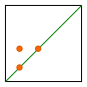
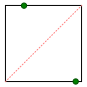
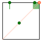
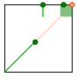
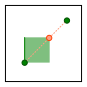
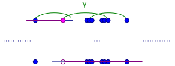
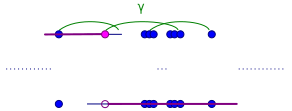
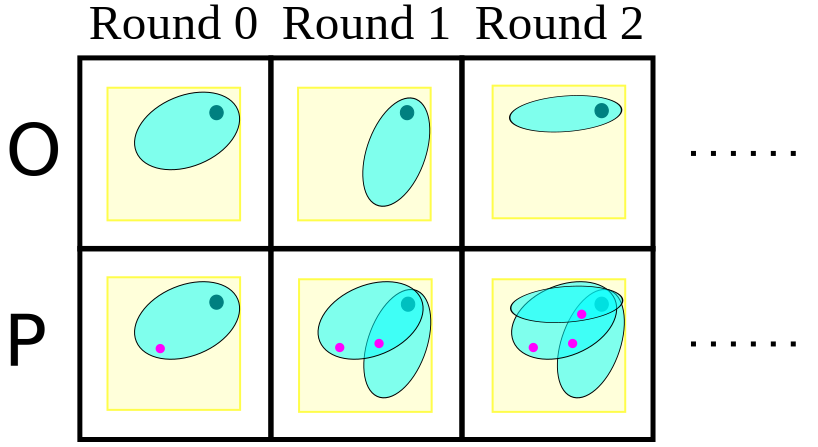

Metrizability in Generalized Inverse Limits
Steven Clontz
2016 March 3rd
Presentation for the University of South Alabama
Abstract [PDF]
For the metric arc I=[0,1] and continuum-valued bonding relation f closed in I^2, the inverse limit lim{I,f,ω} is the subspace of the countable power I^ω containing sequences x satisfying x(n)∈f(x(n+1)). A recent trend in continuum theory is to generalize this notion to lim{I,f,L}, where L is an arbitrary linear order. When L=ω, the inverse limit is a subspace of the metrizable space I^ω; however, we will show that when L is uncountable, the inverse limit cannot be metrizable unless f is trivial. Furthermore, when L is an uncountable well order, it will be shown that the inverse limit is not even Corson compact.
Background and Motivation
Product space: \(I^\omega=[0,1]^{\{0,1,2,\dots\}}\)

Bonding map/relation: \(f\subseteq_{cl} I^2\)


- \(f(x)=[a_x,b_x]\) for all \(x\in[0,1]\). (so \(f\) is connected)
- \(f\) is surjective.
- If \(a_x=b_x\) for all \(x\in[0,1]\), then \(f\) corresponds to a continuous function.
Inverse Limit: \(\varprojlim\{I,f,\omega\}\)

- \(\vec x(n)\in f(\vec x(n+1))\)
Some properties of \(\varprojlim\{I,f,\omega\}\):
- Nonempty
- Metrizable
- Compact
- Connected
Totally ordered index: \(\varprojlim\{I,f,L\}\subseteq I^L\)

- \(\vec x(\alpha)\in f(\vec x(\beta))\) for all \(\alpha\lt\beta\) in \(L\)
- Assume \(f\) is idempotent: \(f(x)=\{z:\exists y\in f(x)\text{ such that }z\in f(y)\}\), i.e. \(f=f\circ f\).

Some properties of \(\varprojlim\{I,f,L\}\):
- Nonempty
- Compact
- Connected
- Hausdorff
Metrizable(?)
Silly example: \(L\) is countable
\(\varprojlim\{I,f,L\}\subseteq I^L\) is metrizable.
Silly example: the identity relation \(\iota\)

\(\varprojlim\{I,\iota,L\}\cong I\) is metrizable
We now assume \(f\not=\iota\).
Counterexample: \(f=\gamma\), \(L=\omega_1\)


\(\varprojlim\{I,\gamma,\omega_1\}\) is the closed long ray of length \(\omega_1\), so not metrizable (or even Corson compact, \(W\), Frechet-Urysohn, etc.)
The \(\Gamma\) condition


There exist \(x,y\in I\) such that \(\langle x,x\rangle,\langle x,y\rangle,\langle y,y\rangle\) are all in \(f\).
Theorem: idemptotent, continuum-valued \(f\) have \(\Gamma\)
If \(\iota\subsetneq f\)...

\(\Gamma\) trivially holds
Can \(f\) miss \(\iota\) completely?

Contradicts connectedness of \(f\).
Can \(f\) only hit one point on \(\iota\)?

Contradicts surjectivity and idempotence of \(f\).
So \(f\cap\iota\) hits two points.
Two cases to handle...
- \(f\cap\iota\) is connected
- \(f\cap\iota\) is disconnected
Case 1: \(f\cap\iota\) is connected

Contradicts surjectivity and idempotence of \(f\).
Case 2: \(f\cap\iota\) is disconnected

Contradicts idempotence of \(f\).
Applying condition \(\Gamma\)
Now that \(\Gamma\) has been verified for our bonding relations, we may restrict our attention to the two-point discrete space \(2=\{0,1\}\) and investigate \(\varprojlim\{2,\gamma,L\}\subseteq\varprojlim\{X,f,L\}\).
 

The total order \(\check L\)
For any total order \(L\), we may define \(\check L=\{A\subseteq L:a\in L,b\lt a\Rightarrow b\in L\}\) which is totally ordered by \(\subseteq\).


The LOTS \(\check L\)
Give \(\check L\) its usual order topology generated by the sets \((A,B)=\{C\in\check L:A\subsetneq C\subsetneq B\}\).
Note \(\check L\) is always a compact space.
\(\check L\cong\varprojlim\{2,\gamma,L\}\)
Note that for \(\vec x\in\varprojlim\{2,\gamma,L\}\), a value of \(0\) may stay \(0\) or change to \(1\) as we look to the left.
But, once the value changes to \(1\), it's forced to stay there.
It follows that each \(\vec x\) is exactly the characteristic function \(\phi_A\) for some \(A\in \check L\); that is, \[ \vec x(l)=\phi_A(l)=\begin{cases} 1 & \text{if } l\in A \\ 0 & \text{if } l\not\in A \end{cases} \]
Note further that in the topology on \(\varprojlim\{2,\gamma,L\}\subseteq 2^L\), a basic open set may fix \(\vec x(a)=1\) and \(\vec x(b)=0\) for some \(a\lt b \in L\).
This is exactly the basic open set \(((\leftarrow,a),(\leftarrow,b])\) in \(\check L\).


Thus the map \(A\mapsto\phi_A\) is a homeomorphism from \(\check L\) to \(\varprojlim\{2,\gamma,L\}\).
Exploiting \(\check L\subseteq\varprojlim\{I,f,L\}\)
Since we've found a copy of the compact space \(\check L\), we can break metrizability and other properties by showing that they cannot hold in \(\check L\).
Ordinals
Consider the totally ordered ordinal spaces such as \(0=\emptyset\), \(3=\{0,1,2\}\), \(\omega=\{0,1,2,\dots\}\), \(\omega+2=\{0,1,\dots,\omega,\omega+1\}\) ordered by \(\subseteq\).
Since \(\alpha+1=\alpha\cup\{\alpha\}\), it's not hard to see that \(\check\alpha=\alpha+1\) for every ordinal, including the first uncountable ordinal \(\omega_1\).
\(W\)-spaces
It's easy to show that every countable \(\alpha+1\) is metrizable.
But in fact, even the first uncountable successor \(\omega_1+1\) is not metrizable, or even a \(W\)-space.
\(Gru_{O,P}(X,x)\)

Player \(\mathcal O\) wins if after \(\omega\) arounds, \(\lim_{n\to\infty}x_n=x\), and \(\mathcal P\) wins otherwise. \(x\) is a \(W\)-point if \(\mathcal O\) has an unbeatable strategy at that point.
In a metrizable space, it's obvious that every point is \(W\) since \(\mathcal O\) can simply choose radii converging to \(0\). Since every point is \(W\), it's a \(W\) space.
\(Gru_{O,P}(\check\omega_1,\omega_1)\)
Because the game only lasts countably many rounds, \(\mathcal P\)'s' countable sequence must have an upper bound \(\beta\) in \(\omega_1\). Therefore \((\beta,\rightarrow)\) is a neighborhood of \(\omega_1\) missing every point in \(\mathcal P\)'s sequence.
Nonmetrizability of \(\check L\), \(\varprojlim\{I,f,L\}\)
We've shown that \(\check\alpha\) is metrizable (or even Corson compact, \(W\), Fréchet–Urysohn, etc. etc.) if and only if \(\alpha\) is countable.
More generally, it can be shown that \(\check L\) is metrizable if and only if \(L\) is countable, since \(\check L\)'s weight always equals its cardinality.
Thus a generalized inverse limit may only be metrizable when \(L\) is countable or \(f\) is trivial.
A few examples
- \(\varprojlim\{I,\gamma,\alpha\}\) is a copy of the closed long ray of length \(\alpha\).
- \(\varprojlim\{I,\gamma,I\}\) is a copy of \(I\times_{lex} I\).
- Let \(M\) be a LOTS with \(0\) and maximum \(1\). \(\varprojlim\{M,\gamma,L\}\) is a quotient space of \(\check L\times_{lex}M\).
Future work
- What other classic (or new/exotic?!) topological spaces may be expressed as \(\varprojlim\{X,f,L\}\)?
- For uncountable \(L\), \(\check L\) can be a \(W\)-space. Can it be Corson compact? Metrizable?
- What minimal criteria guarantee that \(f\) satisfies condition \(\Gamma\)?
- Can similar techniques be used for a family of bonding relations \(\{f_{\alpha,\beta}:\alpha\lt\beta\in L\}\)?
References
- Steven Clontz and Scott Varagona, Destruction of Metrizability in Generalized Inverse Limits, Topology Proc. 48 (2016), 289-297.
- Sina Greenwood and Judy Kennedy, Connected generalized inverse limits, Topology and its Applications, 159 (2012), no. 1, 57-68.
- W. T. Ingram and William S. Mahavier, Inverse limits of upper semi-continuous set valued functions, Houston Journal of Mathematics, vol. 32 (2006) no. 1, 119-130.
- Van Nall, Connected inverse limits with a set-valued function, Topology Proc. 40 (2012), 167-177.
- Scott Varagona, Generalized Inverse Limits Indexed by Totally Ordered Sets, http://arxiv.org/abs/1511.00266
- Patrick Vernon, Inverse limits of set-valued functions indexed by the integers, Topology Applications 171 (2014), 35-40.
Thank you!
Slides available at Clontz.org.